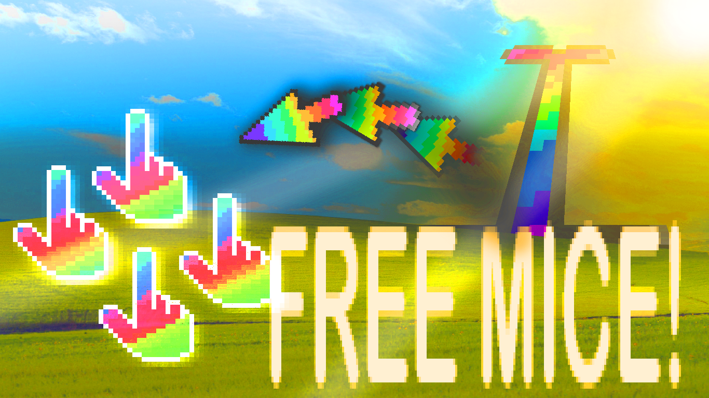
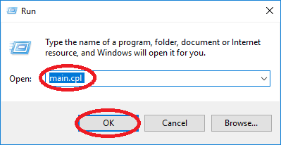
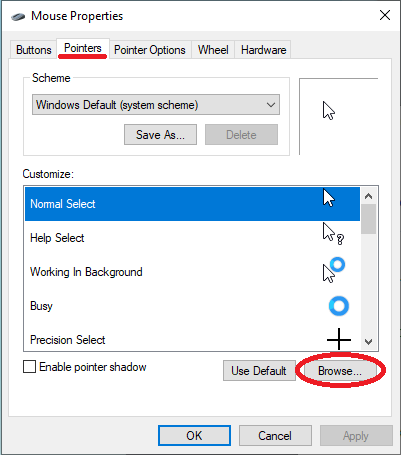
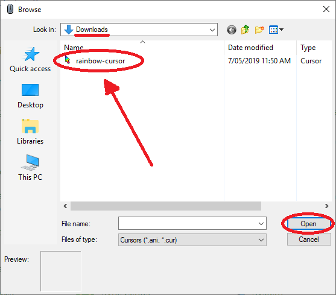
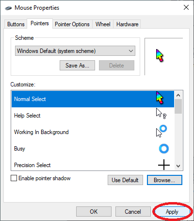
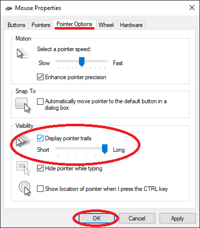
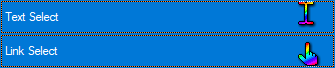

About Page
This is my website soon to be, hi.
Download my Text Editor for FREE (For Windows):
Check out Epic Logic Gates Simulator
Useful Finite State Automata Simulation
Play Tic Tac Toe 3d Online for Free!
Also Download These Free Mouse Clickers!

Step 1:
Click to Download
Click to Download
Click to Download
Step 2: Press Windows R and type: main.cpl Then click OK:

Step 3: Got to Pointers and click browse:

Step 4: Navigate your way to Downloads and click on your mouse pointer:

Step 5: Click Apply:

Step 6: Next go to Pointer Options and select Display pointer trails. Crank up the length to Long and click OK:

Repeat this process for the other 2 cursors -^ and enjoy the rainbow trails.

contact louis@lhobson.com (plz don't sue me for copyright, I stole litterally all the images on here